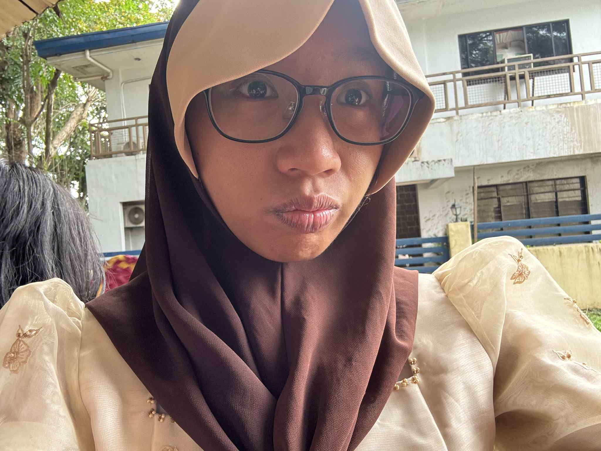

NoughtHungry: For Zero Hunger is a group that advocates for Sustainable Development Goal 2: Zero Hunger. It began with conversations among friends, still high school students, that started off as sharing about their favorite food at their last dinner session together and ended as understanding not only their privileges but their capability. After several discussions with one another, they finally came to an agreement that they could no longer just sit still, enjoy, and feel bad; they wanted to help, too.
For high school students, taking real action to actively support the battle against hunger would be a difficult movement to keep up with, but they did not let that stop them. There were many ways to partake in the fight and they decided that working to publicly promote Sustainable Development Goal 2: Zero Hunger, through gathering and sharing information online, was not so hard at all, especially knowing what real people are going through in real time. NoughtHungry hopes to not only educate individuals but to inspire them to take their own initiative as well, until all of this reaches people who can bring change and through them we can extend our arms to the people who have suffered.
There lives a girl who loves to eat heartily, but cannot stand the fact that there are others her age, younger, and even older who did not have the privilege to eat at all. As a small child, she would take out as many little coins as she could find from the compartments of her family car before getting off for school, because she knew that on the streets outside, just by the walls of her campus, there were people who sat on the rough, hard ground, waiting day and night for even just one peso’s worth of donations to put in their cups. She would later grow up to become a scholar of Philippine Science High School, studying in its Southern Mindanao campus, where she would soon realize that her thoughts and her voice could have an impact on the world if she wanted it to. Born with compassion and developing further skills in service through experiences in teamwork and organizations, Aneesa Fareedah B. Biruar aims to become an individual who can not just bring light to the issue of hunger, but also to how even just one individual can support the fight against it. We have voices, so let us speak up for those who cannot.

Across the world, 29% face food insecurity. You could be a one-in-bllions who is lucky enough to have three meals on your table every day, or a one-in-billions who struggles to take even the smallest bite. Whoever you may be, you matter, and you have a place in this world. You can make a difference.
| Action Against Hunger | Rise Against Hunger |
| Heifer International | World Central Kitchen |
As we advocate for the eradication of hunger in the world, let us never forget to care for our own country, the Philippines. Let us help heal ourselves, too, so that we can all grow and join the movement together.
Contact NoughtHungry: For Zero Hunger through the following methods:
E-Mail Address: noughthungry.fzh@gmail.com
International
Phone Number: +13 101 310 1013
Visit us at the NoughtHungry: For Zero Hunger Headquarters, 1013 Fiere Street, Safire District
Davao City, Philippines
Images sources from:
File:Circle (transparent).png. (n.d.). Wikimedia.
https://commons.wikimedia.org/wiki/File:Circle_%28transparent%29.png
Gmail Logo | SVG |
Real company | Alphabet, Letter M Logo. (n.d.) Pinterest.
https://www.pinterest.com/pin/gmail-logo-united-states--3025924742237394/
WhatsApp logo
(square). (2018). Reuters Institute Digital News Report.
https://www.digitalnewsreport.org/survey/2018/overview-key-findings-2018/attachment/whatsapp_logo_square/
Burgos, M. (2023). All hail the ‘f’: Facebook rebrands its logo with darker shade of
blue. Designboom. https://www.designboom.com/design/facebook-rebrands-logo-darker-shade-blue-09-21-2023/
Feeding the hungry. (n.d.) Northwest Arkansas Democrat Gazette.
https://www.nwaonline.com/news/2011/dec/03/feeding-hungry-20111203/
Touchstone story:
Feeding the hungry. (2016). Lions Clubs International. https://www.lionsclubs.org/en/blog/touchstone-story-feeding-the-hungry
Ravelo, C. (2019). Philippines’ multisector approach to break the cycle of stunting.
Devex. https://www.devex.com/news/philippines-multisector-approach-to-break-the-cycle-of-stunting-95890